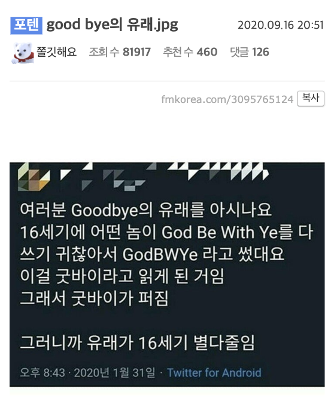
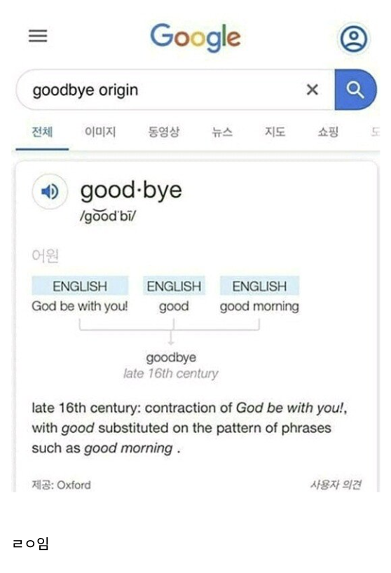
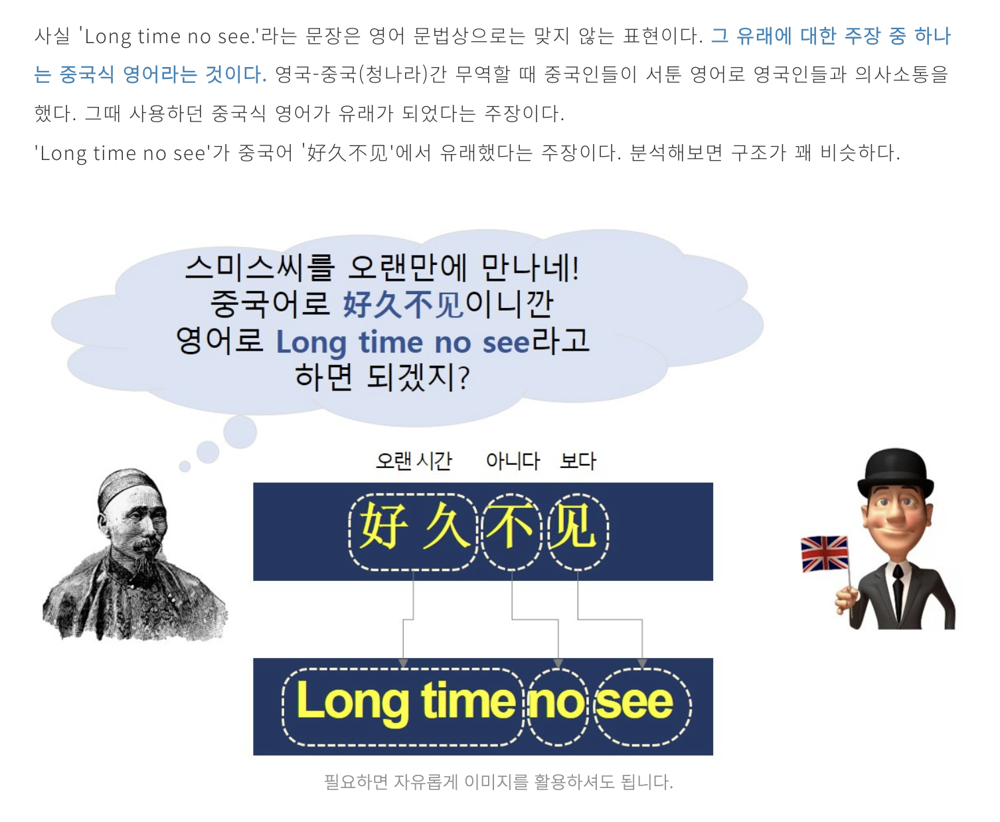

Goodbye는 God be with you의 줄임말

Long time no see는 청나라인으로 부터 유래한 것이라는 설


Goodbye는 God be with you의 줄임말

Long time no see는 청나라인으로 부터 유래한 것이라는 설
5월4일은 너와 함께
오월이 너와 함께하라고 강요하는구나!
forbye ㄷㄷ
곡베이..
유남생?
USMC에서 쓰는 Gungho 라는 표현이라던지, 소스 Ketchup 은 민남어로 액젓을 뜻하는 궤짭(鮭汁)에서 왔다던지, 숙어중에 Lose face, Brainwash 같은 단어들은 그대로 번역차용된 케이스.
겅호 소프트 겅호가 실제 쓰는 단어인지 이제알았네 ㄷㄷ
"gung ho"는 영어 형용사로서 "무모하게 용감하다", "앞뒤 가리지 않고 위험한 일에 뛰어든다"라는 의미를 지닌 단어이다. 다소 부정적인 의미이나, 미국 해병대 등 이런 류의 "배짱", "깡"을 중시하는 조직에서는 긍정적인 의미로 사용한다.
케첩 ㅋㅋㅋㅋ
그럼 제다이는 포스바이라고 말하는건가?
포빠이
나마스떼 = 인도가 영국 식민지 시절 영국인들이 하던 Nice to meet you를 듣고 따라 하다가 생겨난 말이라고 함..
ㄹㅇ????
전혀 아니고, 옛날 산스크리트어에서 나온거임. 나마스=경의를 표하다
테=당신에게
아하 그럼 nice to meet you가 산스크리트어에서 나왔다는 말이구나
나마고뻑유얼쎌프
나마엿처먹어 등등은
나마스테에서 유래
OK는 19세기 잼민이들이 야민정음마냥 일부러 스펠링 틀리게 쓰던 문화에서 비롯됐다고 함.
All Correct -> Oll Korrect -> OK
이거도 싱기하네. 그와중에 OK 가 Okay 보다 더 먼저 나온것도 충격이고
야민정음 쓰던 초딩들이 크면 정사가 되는구나
그럼 30년 후에는..
댕댕이는 표준어로 편입될듯ㅋㅋ
I'm fine thank you. And you?
유아 웰콤 (당신은 잘오다)
울라리
어렸을 때 롱타임노씨라는 표현 처음 듣고 의아했었는데 저런 설이 있구나
롱타임노씨(롱숭이들아 정신이 들어?)
롱의 시간은 볼 수 없을 것이다 ㄷㄷ
대충 아쌀람알라이쿰을 영어로 표현하면 맞구나.
재밌는거 많네
진짜야 구라야 ㅋㅋㅋㅋ
이렇게 일상속 아무렇지않게 쓰던말의 일면같은걸 알게되는게 너무 좋더라
예를들어 "담배"랑 "가방"이 일본에서 넘어온 귀화어다 라던가
구두도 일본에서 넘어온 단어임!
근데 일본엔 한국에서 넘어간 단어임
Long time no see는 처음 딱 들으면 신선하고 재밌는 인삿말로 여겨졌을거같다는 생각이 들어
지상렬식 인삿말 느낌 아니었을까
옛날옛적에 네이버 검색해서 오랜만에 보는 걸 Long time no see라고 한다길래 그럴리가 없다고 부정하고 안 배웠는데
실제로 쓰는 말이었지...
may the force be with you